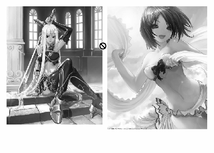

Вёрстка страниц с иллюстрациями
Вёрстка страниц с иллюстрациями в CorelDRAW выполняется не только легко и удобно, но и не требует предварительной подготовки изображений в сторонних программах (растровых редакторах), так как все необходимые параметры изображений можно не только проконтролировать, но и легко и быстро изменить.
Здесь, пожалуй, стоит отметить, что специальные программы для вёрстки InDesign и QuarkXpress не предоставляют возможности пересэмплирования изображений и, кроме того, для вставки изображения в них создаётся специальный т.н. графический блок, который удобств не прибавляет, а иногда и вовсе усложняет работу (скорее всего своим появлением он обязан стереотипу мышления разработчиков: тексту – текстовый блок; изображению – графический блок). В CorelDRAW изображение вставляется на страницу непосредственно, без дополнительного графического блока
Наиболее типичная ошибка при вёрстке страниц с иллюстрациями – это когда вставляют изображения необъятных размеров и масштабируют, просто сжимая за уголок, что приводит к избыточному разрешению изображений, что в свою очередь влечёт увеличение времени вывода на печать (в лучшем случае), а то и вовсе к зависанию процессора. Мне, например, приносили макеты, где вставленные изображения имели разрешение больше 1000 dpi.
Самые большие проблемы создаются любителями «верстать» в Word-е. Широкое распространение и доступность программы, и вместе с тем отсутствие достаточных знаний, приводят к тому, что у дилетантов создаётся иллюзия лёгкости процесса макетирования, а то и вовсе некоторые даже спорят: «Я-то напечатал! А Вы не можете.», забывая при этом, что напечатали они на струйном принтере, у которого обработка информации при печати идёт по-другому и изображение может печататься частями, буквально даже несколькими проходами каретки с печатающей головкой.
Коварство в макетах, свёрстанных в Word-е, могут таить изображения, повёрнутые на некоторый угол. При печати они могут потерять нормальное разрешение.
Кроме того ещё одно коварство Word-овских макетов в том, что при раскрытии их файлов на других компьютерах происходит автоматическая подмена отсутствующих шрифтов, программа не предупреждает о произведённой подмене. Автор забывает предупредить об использовании оригинальных шрифтов, а печатнику до них нет дела.
Несмотря на то, что Word – достаточно мощная программа, всё-таки в первую очередь – это программа для офисных документов и не следует думать, что она годится на все случаи.
Все упомянутые программы поддерживают технологию Drag & Drop (тащу и бросаю), что делает вставку изображения элементарным делом. Выделяете нужный файл хоть в Проводнике или каком-либо просмотрщике изображений и перетаскиваете через панель задач. Но вся прелесть работы в CorelDRAW в том, что, Вы можете смело перетаскивать любые изображения, нисколько не задумываясь о их разрешении. Вставив изображение, смело масштабируйте его до нужных размеров, затем щёлкните по изображению правой кнопкой мыши и, в открывшемся меню выбирете Свойства. В открывшемся окне Свойства объекта выбирете закладку Растр и узнавайте характеристики изображения. Если изображение имеет избыточное разрешение (более 300 dpi), то пересэмплируйте его. Для этого, выделив изображение, выбирете на Главной панели Растровые изображения а, в открывшемся меню – Преобразовать в растровое изображение… Установите нужное разрешение. Следует заметить, что увеличение разрешения цветных изображений более 300 dpi не всегда ведёт к улучшению качества при печати на лазерных принтерах. Дело в том, что в лазерной печати для разрешения изображения применяется понятие линиатура, имеющее тот же смысл, с той лишь разницей,что оно относится к мельчайшему элементу изображения – пикселу, который создаётся так называемыми растровыми розетками – множеством более мелких точек тонера (краски), к которым как раз и относится понятие разрешение лазерного принтера. Разрешение лазерного принтера должно быть почти на порядок больше, чем линиатура или разрешение изображения, и различие это должно быть тем больше, чем больше цветовых оттенков мы желаем получить.
В случаях с изображениями с плохим (низким) разрешением, если требуется их увеличить, следует отдавать себе отчёт, что их пересэмплирование в сторону увеличения разрешения, то есть с добавлением точек, лишь до некоторой степени улучшает качество изображения.
Также следует понимать, что очень высокое разрешение требуется для мелких контрастных объектов (например текст), поэтому часто офисные принтеры, предназначенные как раз для печати текста, имеют разрешение 600 dpi. Для изображений с полутоновыми переходами приемлемо менее высокое разрешение.
Удобство вёрстки в CorelDRAW ещё и в том,что при необходимости скорректировать цвета изображения, это можно легко сделать в Лаборатории по корректировке растровых изображений (Главная панель – Растровые изображения).
Что касается обтекания изображения текстом, то хочу поделиться приёмом, которым пользуюсь давно, и который, как мне кажется, даже более удобен и гибок. Собственно режимы обтекания я даже не использую вовсе, а создаю два или три связанных текстовых блока, которые окружают изображение и, изменяя их размеры,подбираю более приемлемый вариант расположения текста. Большая гибкость здесь проявляется в том, что текст совсем не обязательно «облепляет» картинку, а занимает нужное место. Это особенно важно для таких страниц, где, например, заканчивается глава или статья, и Вы не хотите чтобы внизу этой страницы начиналась другая, и располагаете текст более свободно. При пользовании таким способом надо обращать внимание на точное позиционирование одного блока относительно другого по высоте, чтобы смежный между блоками межстрочный интервал был таким же как и в блоках. Эту доводку лучше делать уже после того, как Вы определитесь с размерами блоков. Несмотря на кажущуюся трудность, на самом деле всё это не занимает особого труда и времени.

На этом рисунке показан пример, когда применение обычного приёма обтекание текстом не подходит, так как под изображением надо поместить подрисуночную подпись. Иллюстрации с подрисуночной подписью – случай довольно частый.

На этом рисунке демонстрируется пример, когда требуется получить фигурную линию обтекания.
Накройте текстовый блок фигурой, край которой имеет требуемую линию обтекания. Щёлкните по ней правой кнопкой мыши и задайте Обтекание текстом. Фигура может быть как без цвета, так и цветная, а абрис без цвета. Фигура, обтекаемая текстом будет являться как бы подложкой для изображения.

Текст можно также ограничить с двух или более сторон.
На этом рисунке текст ограничен двумя фигурами. На следующем рисунке видно, как текст заполняет намеченное пространство при растягивании верхней фигуры в виде сектора в четверть круга.

Категорически не согласен! Мне лично он ни каких неудобств не приносит, одни только удобства.
Для верстки в кореле нужен большой багаж знаний!
Но корел слишком лёгкая в освоении программа, поэтому у нас так много дизайнеров и корело-верстальщиков, как раз не имеющая этого багажа. В итоге творят невообразимые "красоты".
Корел подходит для верстки только в том случае, если нужно очень по быстрому что то РАЗОВОЕ сделать. Что актуально для мини-типографий, которые симофорят вывесками типа "Оперативная полиграфия".
Для профессиональной вёрстки он не подходит, по многим причинам, смысл перечислять которые, я не вижу.
Удобство в нём пока вижу лишь для быстрого кадрирования изображения, что в CorelDRAW легко можно сделать обрезкой.
А неудобство в том, что при масштабировании изображения приходится выполнять это отдельно и для графического блока.

Solowejka, ты ошибаешься!
Поверь тем кто верстает или верстал, как в Corel так и в InDesign!
Это к верстке не относиться но все же, не говоря уже о том что в InDesign ты не внедряешь фотки а используешь link.
Мне присылают на каждое мероприятие в посольстве до 600 фотографий, которых надо быстро подогнать по размерам и распечатать, InDesign позволяет это сделать очень быстро а в Corel готов повеситься!
Добавлено (29.05.2010, 13:41)
---------------------------------------------
Sancho, CS5 это уже шедевр!
Добавлено (29.05.2010, 13:48)
---------------------------------------------
Solowejka, попробуй в Corel-e взять 100 фоток разных размеров, поставь на каждую страницу, но чтоб по краям оставалось по 20мм, и главное учитывать то, что их нужно будет выравнивать в лева или в право, а у некоторых, по верху или по низу, как тебе задачка?
Раз уж речь зашла о вёрстке, то справедливости ради, стоит заметить что вёрстка это прежде всего работа с текстом. А уж в этой стезе корелу не по силам тягаться с индизайном. Однако те возможности которые есть в кореле позволяют придать тексту читабельный вид, пусть и не совсем быстро и не так удобно как хотелось бы.
Об этом, я думаю, в одной из последующих заметок я и расскажу.
Solowejka, выравнивать я имею в виду то, что пришел заказчик и говорит мне важна правая часть, а у другой, допустим, нижняя! И так с каждой фоткой! InDesign рулит!
Нисколько не хочу умалять достоинств серьёзных программ.
Но в настоящее время есть и такие заказчики, которые и не требуют особо притязательных макетов. Рекламные листовки, буклеты, каталоги, брошюры – всё это можно вполне создавать в CorelDRAW. А потребителю печатной продукции сердце не греет мысль: "Свёрстано в InDesign" (или какой-либо ещё).
Sancho ,
Пусть мне не довелось работать в серьёзных издательствах, но и моя вёрстка востребована. Приведённая анимация конечно же демонстрирует большие возможности продвинутых версий программ, но в моей практике такой случай подгонки двух смежных изображений ещё не случался, а если и выпадет, то совсем необязательно его решать автоматизированным путём.
Des425,
Задача наполнения ста страниц сотней изображений, которые имеют различные исходные размеры с подгонкой изображений к полям в 20 мм от краёв листа не представляет в CorelDRAW ничего сложного (хотя, действительно, это уже не вёрстка страниц с иллюстрациями, а создание альбома изображений).
1. Создать фигуру-маску, накрывющую поля на мастер-странице (в нек.версиях переведено: Главная страница) – дело одной минуты.
Также будет не лишним здесь же создать пользовательскую заготовку направляющих, отбивающих поля по 20 мм.
2. Кинули на страницу изображение, с помощью гор.кл. центрируете на странице.
3. С нажатой Shift растягиваете за уголок пока края изображения не «прилипнут» к направляющим или втягивайте под поля, если пропорции изображения другие и надо заполнить окно (фрейм) полнее. Если пропорции сильно отличаются от прямоугольника, а фрейм надо заполнить полностью и скадрировать изображение не жалко, то тяните пока весь фрейм не заполнится, а вылезшие за края листа части изображения обрезать, используя опять же привязку к направляющим, секундное дело.
4.Добавить страницу (у меня для этого назначена горячая клавиша со знаком +).
Далее повторить пункты 2,3.
Все выравнивания я делаю с помощью горячих клавиш (для выравнивания двух объектов по краю у меня назначены кл. Ctrl и кл. со стрелкой с соответствующим направлением).
Что касается линкованых (связанных) файлов, то действительно по умолчанию вставленные изображения линкуются, но это не означает, что они не могут быть встроены.
Хотя, линкование – это действительно преимущество для многостраничных файлов с большим количеством иллюстраций.
А как Вам такая задачка?:
надо сверстать многостраничное издание с большим количеством иллюстраций. Пользоваться можно только CorelDRAW.
А как вам такая задача?
надо выкопать яму 4х4х4. Пользоваться можно только ломом :D
Black,
Вы наверно уже заметили, что я с Вами никогда не спорю. Не потому, что нечего возразить, а потому, что Вы не слышите оппонента.
Если переходить на язык юмора, то могу Вам и так ответить: если до ближайшей булочной можно быстро дойти пешком, можно ли до неё доехать на грузовике?
А если серьёзно, то я то Вашу загадку с приведённым скриншотом, где текст в круге решил. Хотя решение было не на поверхности. Х4 версия Сorel не предоставляет команды преобразовать контур в текстовую рамку, как это можно сделать в InDesign.
Но подумал и решил именно средствами Corel.
Моя задачка, над которой Вы изволили шутить вполне решаема.
Просто Вы думать не хотите.
За что я люблю Coreldraw, так именно за то, что в ней многое сделано с головой, то есть продумано.
Действительно, куда уж сложнее просто тыкнуть инструментом ТЕКСТ в объект :D
П.С. хоть бы почитал с начала, для примера это, а потом бы писал что то.
П.С.С. Короче все здесь не правы, один тока Solowejka прав :D А мы так, лошня :D
Страницы